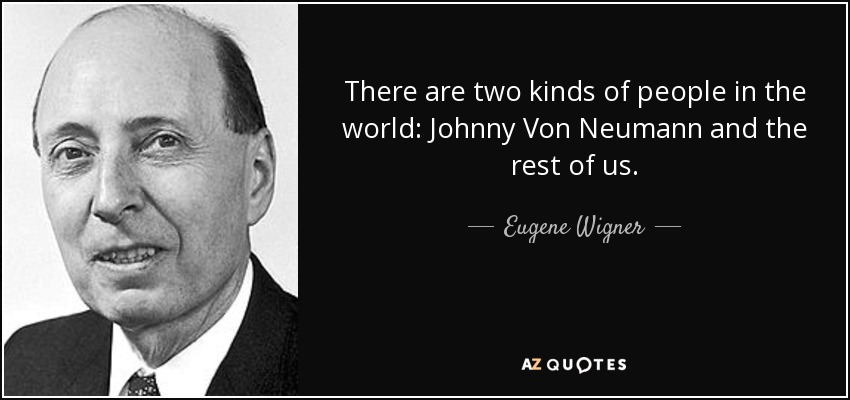
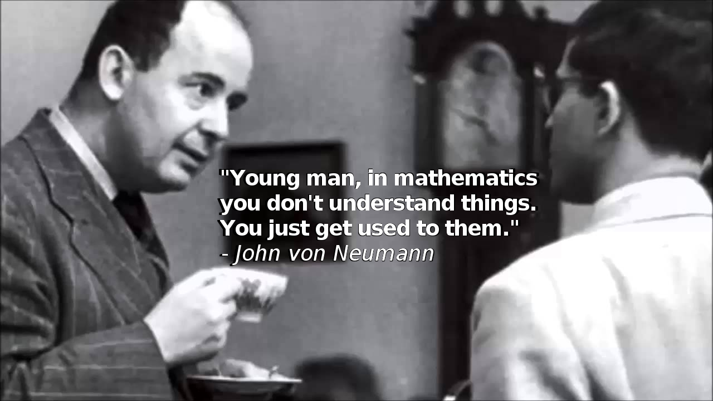

Words From The Man Himself

John von Neumann was blatantly sharp but was also described as having a warm personality filled with charm, courtesy, and a touch of dry humor. He impressed many of his colleagues and soon the saying, “Most mathematicians prove what they can, von Neumann proves what he wants,” became popular. Mathematician George Polya was even quoted saying “John von Neumann was the only student I was ever afraid of,” in regards to his massive intellect.
We can still appreciate John’s personality and wisdom through some of the quotes that were written down in history. Just to name a few:


